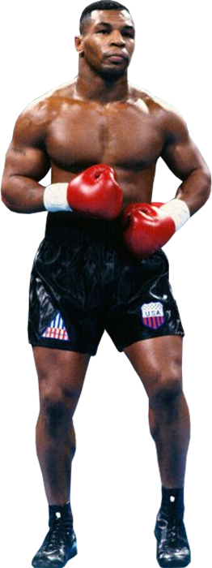
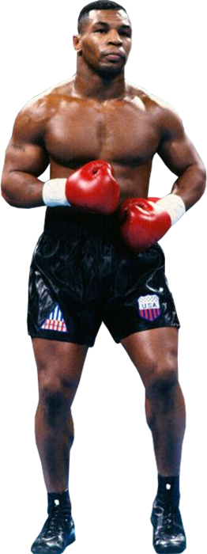

Mijn naam is Jody Mahmoud, ik ben 17 jaar oud en ik ben geboren in Syrië. Toen ik ongeveer acht jaar oud was, ben ik samen met mijn familie naar Nederland gekomen. Inmiddels woon ik hier al bijna negen jaar.
 

In mijn vrije tijd ben ik vaak bezig met sporten en creativiteit. Mijn grootste hobbys zijn voetballen, trainen in de sportschool, boksen en tekenen. Sporten geeft mij veel energie en zorgt ervoor dat ik fit blijf. Vooral boksen betekent veel voor me, omdat het niet alleen een sport is, maar ook discipline en doorzettingsvermogen vraagt. Mijn favoriete bokser is Mike Tyson, omdat ik zijn kracht, snelheid en mentaliteit bewonder.
Op school volg ik het NG-pakket (Natuur en Gezondheid). Dit pakket past goed bij mij, omdat ik geïnteresseerd ben in exacte vakken. De vakken die ik heb zijn bedrijfseconomie, bewegen en sport, biologie, CKV, engels, informatica, LEF, maatschappijleer, mentorles, natuurkunde, nederlands, scheikunde en wiskunde B Mijn favoriete vakken zijn wiskunde en informatica. Wiskunde vind ik leuk omdat ik graag problemen oplos en analytisch nadenk, en bij informatica kan ik mijn interesse in technologie en computers verder ontwikkelen.
In de toekomst hoop ik mijn talenten en interesses te combineren. Misschien wil ik iets doen in de techniek of IT, of mijn passie voor sport verder uitbouwen. Voor nu geniet ik van de kansen die ik krijg in Nederland, en probeer ik mezelf elke dag te verbeteren — zowel op school als daarbuiten.